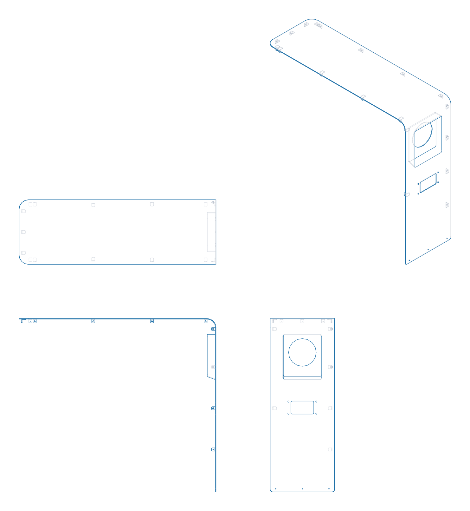

도면1.dxf — SUS304 2T 절곡 케이스
실제 DXF에서 추출한 SPLINE/치수와 사용자 확인 사양을 표시합니다. 투상도 선 길이는 절단 길이로 사용하지 않습니다.
실제 DXF 미리보기

파랑: 보이는 곡선 / 회색: 숨김 곡선. DXF 스플라인을 근사해 표시합니다.
도면 분석·확정 정보
1,606SPLINE
3DIMENSION
204가로 mm
547높이 mm
622깊이 mm
2TSUS304
수량 1개 · 레이저 절단 + 절곡 · 용접 제외
도면 단위 설정 미지정(INSUNITS=0). 치수값과 사용자 확인 내용을 기준으로 제품 규격을 표시합니다.
도면 단위 설정 미지정(INSUNITS=0). 치수값과 사용자 확인 내용을 기준으로 제품 규격을 표시합니다.
절곡 케이스 원가 계산
전개 면적, 절단 길이, 절곡 횟수는 아직 자동 확정되지 않았습니다. 실측/전개도 확인 후 입력하세요. 입력 전에는 계산·저장이 차단됩니다.
전개 면적·절단 길이·절곡 횟수·단가를 입력하세요.
예시 밀도 7,930 kg/m³. 면적은 절단 전 전개 외곽 면적(구매 소재 기준)으로 입력하며, 이용률을 별도 적용합니다. 홀 면적 차감이나 소재 규격 네스팅은 미구현입니다.
도면 업로드 및 검토
DXF(ASCII) 형상 기본 분석, PDF 미리보기를 지원합니다. DWG는 DXF로 변환해 업로드하세요.
도면을 선택해 주세요.
도면 미리보기
파일을 선택하면 표시됩니다.
추출 결과 (검증 필요)
자동 추출은 견적 입력값을 확정하지 않습니다. 도면과 대조 후 치수를 입력하세요.
품목별 원가 계산
값을 입력하고 계산하세요.
견적 이력
이 브라우저에만 저장됩니다. 다른 PC와 자동 동기화되지 않습니다.
블루시스템 단가 CSV 가져오기
블루시스템 직접 연결이 아닙니다. 블루시스템에서 내보낸 CSV를 아래 형식으로 변환하여 업로드합니다.
external_code,name,category,unit,unit_price,effective_date